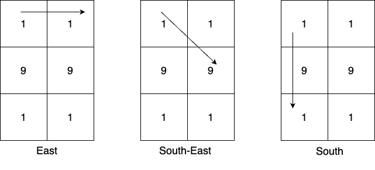

| Category | Difficulty | Likes | Dislikes |
|---|---|---|---|
| Algorithms | Medium | 101 | 70 |
array | hash-table | math | matrix | counting | enumeration | number-theory
google
You are given a m x n 0-indexed 2D matrix mat. From every cell, you can create numbers in the following way:
8 paths from the cells namely: east, south-east, south, south-west, west, north-west, north, and north-east.1, 9, 1, then there will be three numbers generated along the way: 1, 19, 191.Return the most frequent prime number greater than 10 out of all the numbers created by traversing the matrix or -1 if no such prime number exists. If there are multiple prime numbers with the highest frequency, then return the largest among them.
Note: It is invalid to change the direction during the move.
Example 1:

Input: mat = [[1,1],[9,9],[1,1]]
Output: 19
Explanation:
From cell (0,0) there are 3 possible directions and the numbers greater than 10 which can be created in those directions are:
East: [11], South-East: [19], South: [19,191].
Numbers greater than 10 created from the cell (0,1) in all possible directions are: [19,191,19,11].
Numbers greater than 10 created from the cell (1,0) in all possible directions are: [99,91,91,91,91].
Numbers greater than 10 created from the cell (1,1) in all possible directions are: [91,91,99,91,91].
Numbers greater than 10 created from the cell (2,0) in all possible directions are: [11,19,191,19].
Numbers greater than 10 created from the cell (2,1) in all possible directions are: [11,19,19,191].
The most frequent prime number among all the created numbers is 19.Example 2:
Input: mat = [[7]]
Output: -1
Explanation: The only number which can be formed is 7. It is a prime number however it is not greater than 10, so return -1.Example 3:
Input: mat = [[9,7,8],[4,6,5],[2,8,6]]
Output: 97
Explanation:
Numbers greater than 10 created from the cell (0,0) in all possible directions are: [97,978,96,966,94,942].
Numbers greater than 10 created from the cell (0,1) in all possible directions are: [78,75,76,768,74,79].
Numbers greater than 10 created from the cell (0,2) in all possible directions are: [85,856,86,862,87,879].
Numbers greater than 10 created from the cell (1,0) in all possible directions are: [46,465,48,42,49,47].
Numbers greater than 10 created from the cell (1,1) in all possible directions are: [65,66,68,62,64,69,67,68].
Numbers greater than 10 created from the cell (1,2) in all possible directions are: [56,58,56,564,57,58].
Numbers greater than 10 created from the cell (2,0) in all possible directions are: [28,286,24,249,26,268].
Numbers greater than 10 created from the cell (2,1) in all possible directions are: [86,82,84,86,867,85].
Numbers greater than 10 created from the cell (2,2) in all possible directions are: [68,682,66,669,65,658].
The most frequent prime number among all the created numbers is 97.
Constraints:
m == mat.lengthn == mat[i].length1 <= m, n <= 61 <= mat[i][j] <= 9